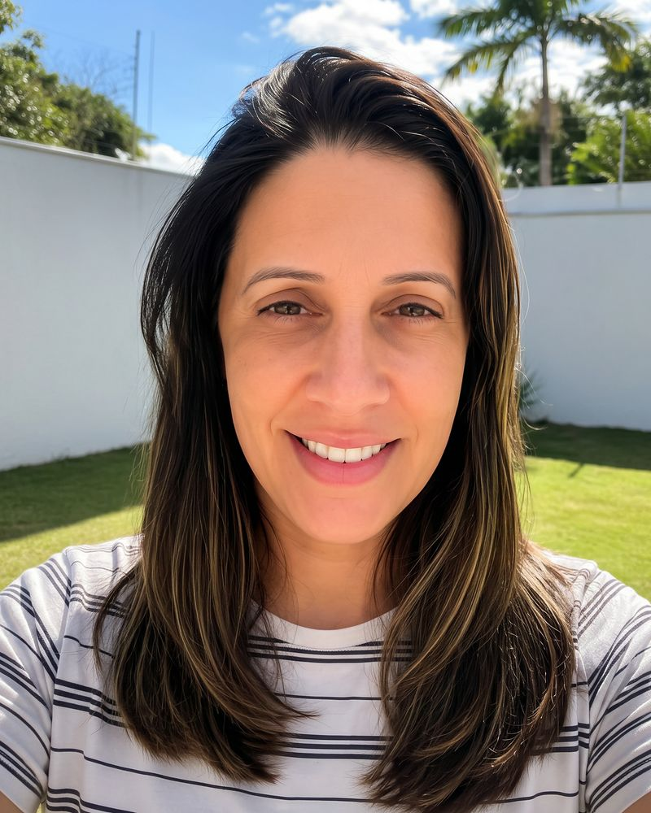

Por que a mesma história insiste em voltar?
A hipnose clínica ajuda a encontrar o que sustenta a ansiedade, o desânimo e as escolhas que se repetem.

Coisas que quem chega aqui costuma me contar
Isso não diz nada sobre a sua força. Diz sobre o quanto você vem carregando.
Ansiedade, desânimo e padrões que voltam sempre costumam vir de experiências que ficaram guardadas. Na hipnose clínica, a gente olha para elas com calma e no seu tempo.
- Meu corpo vive em alerta, mesmo quando está tudo bem.
- Abro os olhos de manhã e o dia já parece pesado demais.
- Perdi a vontade de fazer coisas que antes me davam prazer.
- Mudo de emprego, de relação, de cidade, e a mesma história se repete.
- Sinto o corpo tenso e dolorido, e os exames dizem que está tudo normal.
Como eu trabalho com a hipnose clínica
Cada parte se apoia na outra e se ajusta à sua história.
-
Escuta do todo
AnamneseAntes de qualquer técnica, entendo sua história, sua rotina e o que o seu corpo tem sinalizado. É daí que sai o plano.
-
Foco que acalma
Transe hipnóticoEm estado de relaxamento e atenção concentrada, você acessa com mais clareza o que alimenta a ansiedade e o desânimo.
-
Novos caminhos
Ressignificação e sugestões terapêuticasTrabalhamos o sentido que certas experiências ganharam, abrindo espaço para respostas diferentes das de sempre.
Para onde as consultas apontam
Dormir e acordar com mais descanso
Perceber os gatilhos antes que virem crise
Recuperar o interesse pelo que fazia sentido
Escolher respostas novas onde antes só havia repetição
Com o que eu mais trabalho
-
Ansiedade
A cabeça que corre na frente
Preocupação que não desliga, coração acelerado, medo do que ainda nem aconteceu. A ansiedade cansa o corpo inteiro, e é por ele também que começamos a desacelerar.
-
Depressão
Quando tudo perde a cor
Desânimo que se arrasta, sono que não descansa, distância das pessoas e das coisas que antes importavam. A hipnose clínica pode ser uma aliada, junto do acompanhamento médico.
-
Repetição de padrões
O mesmo roteiro, de novo
Relações que terminam do mesmo jeito, a autossabotagem perto de conquistar algo, reações que você promete mudar e repete. Na consulta, olhamos para o que mantém esse roteiro de pé.
Passo a passo do atendimento
Consulta de avaliação
Conversamos sobre o que trouxe você até aqui, a sua história e o que espera das consultas.
Nessa consulta, também aplico uma técnica de liberação emocional. Muitas pessoas relatam alívio já nesse primeiro encontro.
Plano
Com base na avaliação, explico como serão as consultas e o que vamos trabalhar primeiro.
Consultas
Em cada encontro, a hipnose clínica é aplicada com calma, com você consciente do começo ao fim.
Acompanhamento
Revemos o que mudou na sua rotina e ajustamos o caminho a cada etapa.
Atendimento em Domingos Martins, ES, e online
O consultório fica em Pedra Azul, na região serrana do Espírito Santo, num ambiente reservado e silencioso. Para quem mora longe, as consultas online seguem o mesmo cuidado.
Consultório em Pedra Azul
R. Canal, 206, Vila de Pedra AzulDomingos Martins, ES, 29260-000 Ver no mapa
Consultas online
Por chamada de vídeo, de onde você estiver. Para aproveitar bem, separe:
- Um lugar tranquilo, onde ninguém interrompa
- Internet estável
- Fones de ouvido
Eu sou Ivonete Morelo
Sou hipnoterapeuta. Cuidar das pessoas sempre foi o que me move, e a hipnose clínica virou o meu jeito de fazer isso.
Atendo no meu consultório em Pedra Azul, em Domingos Martins, e também online.
Cuidar é olhar além da dor: pela hipnoterapia, podemos acolher o que o corpo sente e transformar o que a mente carrega.
Ivonete Morelo, Hipnoterapeuta
Dúvidas comuns sobre a hipnose clínica
Vou perder o controle durante a hipnose?
Não. Na hipnose clínica você fica consciente o tempo todo, ouve tudo o que acontece e pode falar, se mexer ou interromper a consulta quando quiser. O que muda é o foco: a atenção fica mais concentrada e o corpo, mais relaxado. Nada é feito contra a sua vontade.
Como funciona uma consulta de hipnose clínica?
Primeiro conversamos sobre como você está e o que vamos trabalhar naquele dia. Depois, conduzo você a um estado de relaxamento e atenção concentrada, usando a voz e a respiração. Nesse estado, trabalhamos as lembranças, sensações e crenças ligadas ao que você trouxe. No fim, conversamos sobre o que surgiu.
A hipnoterapia é reconhecida?
Sim. A hipnoterapia faz parte das Práticas Integrativas e Complementares em Saúde do SUS desde 2018, pela Portaria nº 702 do Ministério da Saúde. Ela é usada como apoio ao cuidado da saúde, junto com outros acompanhamentos, e não no lugar deles.
Posso fazer todo o processo online?
Pode. As consultas online seguem o mesmo roteiro das presenciais, por chamada de vídeo. Você só precisa de um lugar reservado, onde ninguém interrompa, internet estável e fones de ouvido.
E se o meu caso não estiver entre os temas do site?
Me conte pelo WhatsApp. Ansiedade, depressão e padrões que se repetem são o foco do meu trabalho, mas não os únicos. Se eu perceber que outro profissional pode ajudar mais no seu caso, eu digo com sinceridade e indico outro caminho.
Quantas consultas vou precisar? Quando percebo mudanças?
Depende de cada história, por isso não trabalho com um número fechado de consultas. Na consulta de avaliação, combinamos um plano e revemos o andamento a cada etapa.
A hipnoterapia é complementar e não substitui acompanhamento médico, psiquiátrico ou psicológico. Se você usa medicação, não interrompa nem mude a dose sem orientação de quem receitou.
Existe alguém que não deve fazer hipnose?
Em alguns casos, a hipnose não é indicada ou só deve acontecer com liberação médica: crises psicóticas, transtorno bipolar ou epilepsia sem controle, e uso de álcool ou drogas antes da consulta. Na avaliação, conversamos sobre a sua saúde para que tudo aconteça com segurança.
Se você estiver em crise ou pensando em tirar a própria vida, procure ajuda agora: ligue para o CVV no 188 (gratuito, 24 horas) ou para o SAMU no 192.
Ficou alguma pergunta sem resposta?
Me mande uma mensagem e eu respondo pessoalmente.
Sua história pode ganhar outro roteiro
Me chame no WhatsApp e a gente encontra o melhor horário para a sua consulta de avaliação.